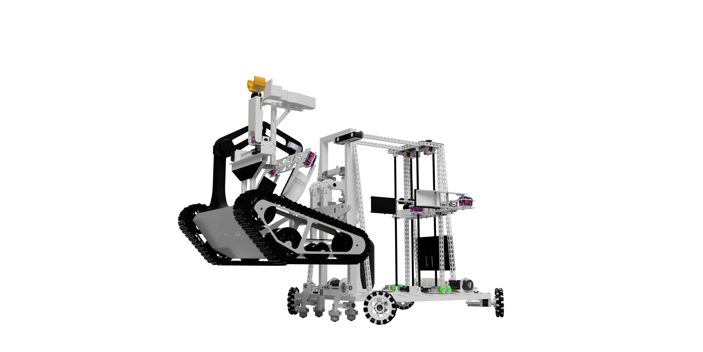
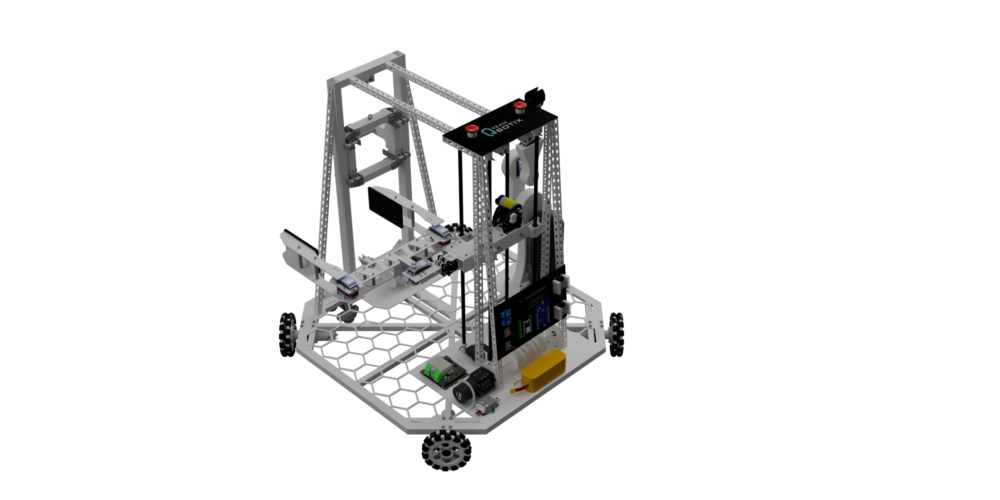
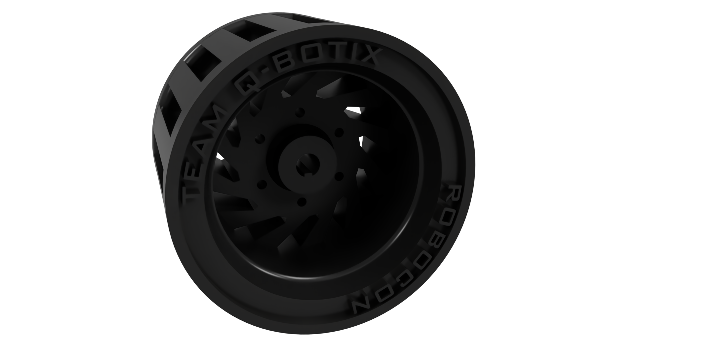
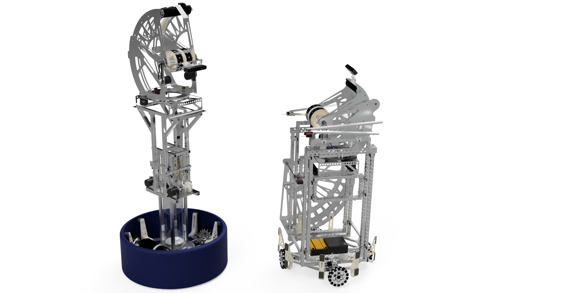
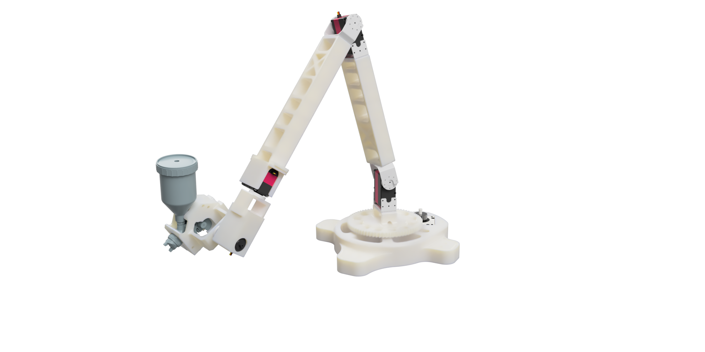
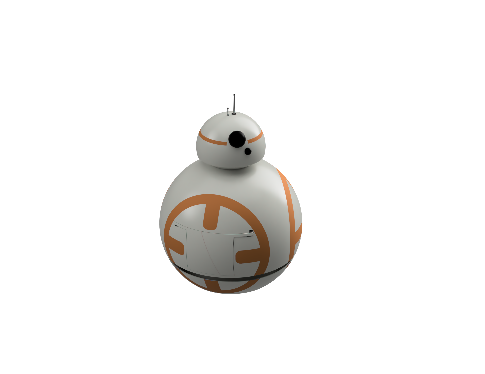
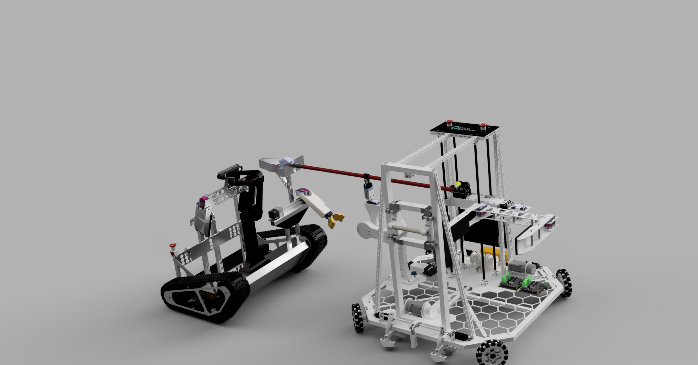
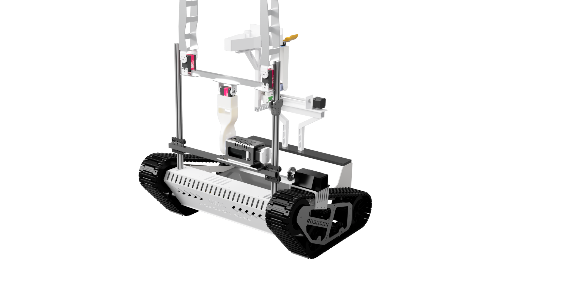
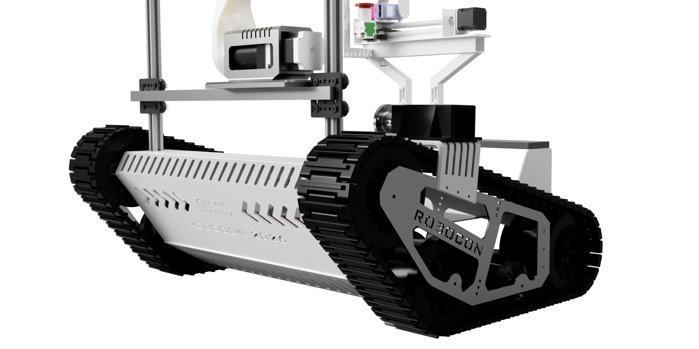
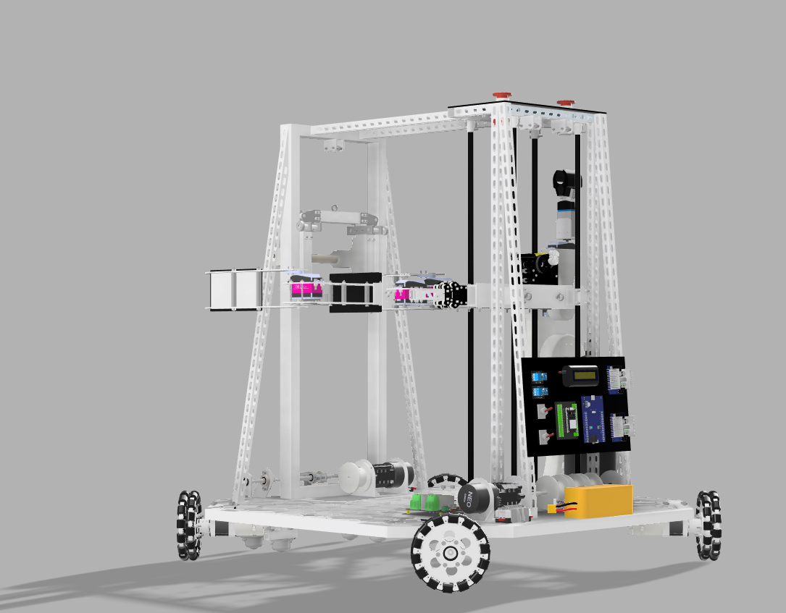

Opening external link in a moment...
Focused on 3D CAD modeling, product design, custom manufacturing, and building autonomous mechanical systems.
I am an Automobile Engineering student at Kumaraguru College of Technology. My work focuses on designing mechanical parts, complex mechanism design, and testing autonomous hardware.
Robotics Design Engineer for 2 years, building custom systems, kinematic models, and automation mechanisms.
Awarded Merit Scholarship for 3 consecutive years.
Served as an NCC Cadet for 3 years, building resilience and leadership through rigorous training.
Holder of the NCC 'C' Certificate. Led squad operations and managed student activities.
Click any project to open its dedicated view and full technical details.

Dual vision-guided basketball feeder & turret shooter robots engineered for ABU Robocon.

Autonomous tracked XO robot & manual 4-wheel mobile platform built with TPU custom treads.

6-axis articulated arm designed for automated adhesive and paint spraying in shoe manufacturing.

Customized interactive office droid featuring a Waffle Pi base, motorized belly drawer, and head audio.
Designing an amphibious vehicle for Ampere as part of my final year engineering project.
Three years of dedicated service, navigating through difficult challenges and developing strong leadership and tactical skills.
Designing custom robotic mechanisms and automation systems for industrial and academic projects.
Led the mechanical design, CAD modeling, and hardware fabrication for the Robocon 2026 robotics contest.

Dual system showcase: Manual 4-Wheel platform & Autonomous Tracked robot
Fusion 360 CAD view: Autonomous tracked robot Fusion 360 CAD view: Manual 4-wheel robot
Fusion 360 CAD view: Manual 4-wheel robot

Autonomous tracked robot with Panzer-style TPU treads
Manual 4-wheel mobile support platform